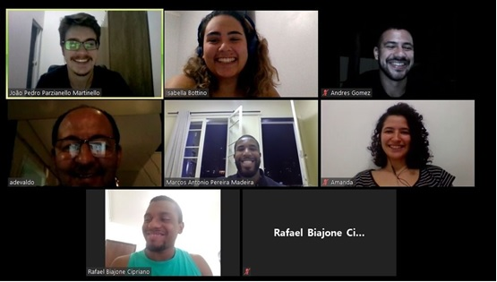
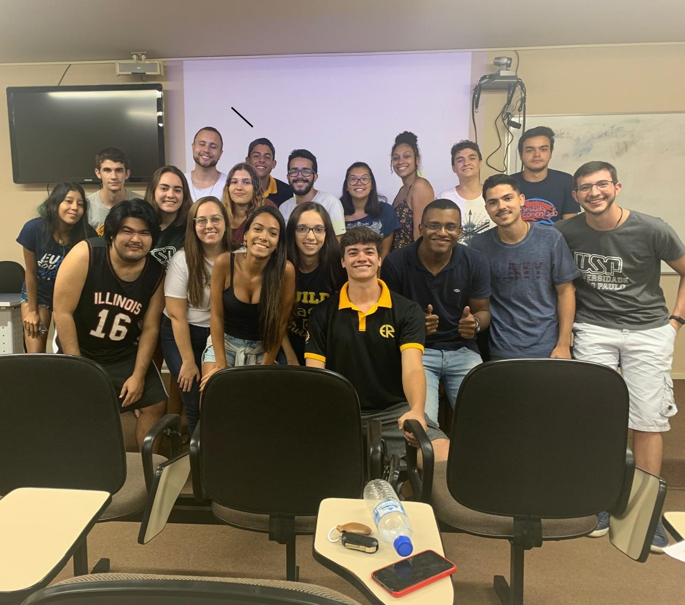
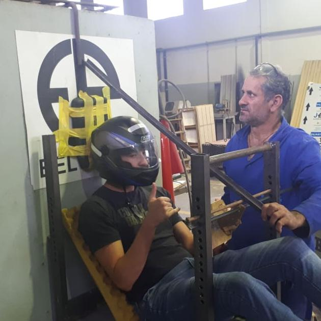

"Fascinado por técnicas de análise de dados e BI, sou
em Graduando de Engenharia Química e busco inovar a cada momento,
"Fascinado por técnicas de análise de dados e BI, sou
em Graduando de Engenharia Química e busco inovar a cada momento,
tanto em trabalhos em grupos quanto indivualmente, com novas ideias, novas perspectivas e claro, como muito estudo."
Rafael hoje é :
- Graduando de Engenharia Química;
- Gestor da Entidade EEL RACING;
- Pesquisador Fapesp;
Experiências da Época da graduação:
-
Projeto de redução de custos para a empresa VoltzEletro em que utilizamos planilhas Excel e dashboards em PBI
para mostrar as oportunidades de onde poderia se reduzir os custos do Sponsor - Dinâmica Group; - Conceitos de Green Belt e da metadologia DMAIC;
- Uso de ferramenta de BI com o próprio PBI e planilhas no excel;
-
Uso do framework Scrum para gerenciarmos os projetos de maneira mais ágil,
assim como dentro do grupo dividiamos as funções em PO, Scrum Master e time de desenvolvimento,
cada um com responsabilidades de acordo com os conceitos de Scrum já apresentados por Jeff Sutherland.
Assim, aplicamos suas fases como Sprint Backlog, as Sprint, Sprint Review e outras,
além de acompanharmos nosso desenvolvimento com velocitys charts entre outros. -
Gestão da equipe EEL Racing em 2020 em que gerenciei um grupo de projetos,
para simularmos e testamos um carro para a competição da FSAE;O que foi aprendido e usado:
- Conceitos de mecânica estrutural e de elementos finitos;
- Uso de softwares de simulação e modelagem como Ansys e Solidworks;
- Tive experiência em oficina e gestão de projetos para produzir as partes essenciais do carro
O que foi aplicado:

 